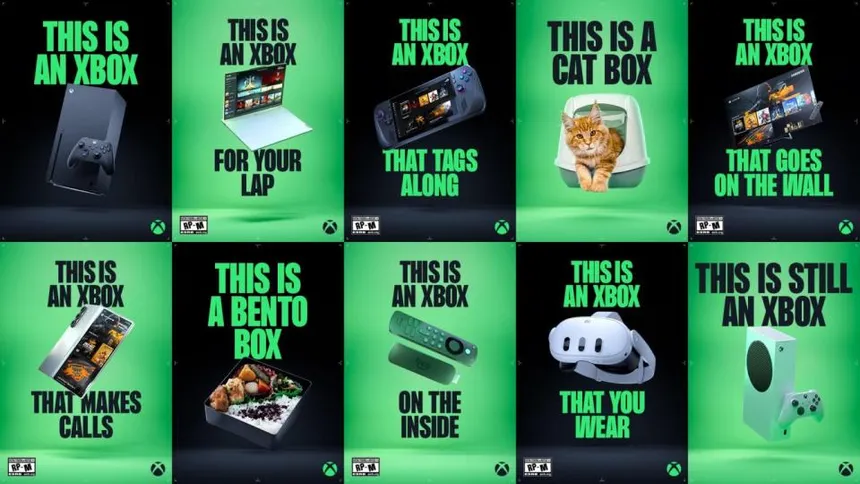

Popular Posts:
Socials:
Microsoft No Longer Values XBOX
November 26, 2024 Ladies and gentlemen, what we are seeing is the latest advertisment campaign from Microsoft. According to this ad, everything from the actual console to your phone, laptop, Amazon Fire TV Stick, Smart TV, to even your VR headset, is an XBOX. Unfortunately, this comes at the dismay of the hardcore XBOX fans, as it feels that the pure XBOX consoles are becoming more and more de-valued and the hardcore fandom being abandoned. It's been no small secret that Microsoft has been shifting its focus away from traditional console development and to a more cloud-based/3rd-party focused one. Already, this noticable shift in priority is much to the ire of XBOX fans; but, this recent ad campaign seems to be yet another nail in the coffin for the XBOX as a major player in the gaming space.
The fall of XBOX as a console brand is attributed to many things, but many fans will point the less than savory reveal and launch of 2013's XBOX ONE. Simply put, the beginning of the XBOX ONE's lifespan was a mess. From the get-go, the 8th-gen console started off the wrong foot for many of the XBOX faithful, as it seemed more focused on TV and general entertainment than games, was initially heavily-restricted for those without a persistent Internet connection via DRM, was expensive at launch, tried to turn game discs into glorified installation hardware, and lacked quality exclusive games compared to its direct competition (i.e., the PS4). Coming off the monolith success that was the XBOX 360, this to many a XBOX fan was a massive dissapointment of all fronts. Fortunately, the XBOX ONE would be able to fix itself slightly throghout the 8th generation, but Microsoft and the XBOX brand would never fully recover from this massive blunder. In the twillight years of the XBOX ONE's lifespan, we saw some features come out of XBOX that many found pretty neat. These included features such as backwards compatibliy with both the original XBOX and 360 and the cloud-based gaming service XBOX Game Pass; which is the most revelevant to this recent turn off events.
While highly recieved and relatively successful when it first launched, the cloud service has had experienced slow growth since early 2022. In fact, since last year of 2023, Game Pass has been in fact been losing subscribers! There are many reasons for this, but as detailed by Forbes, the de-emphasizing of the the tradional XBOX consoles is definitely a major one. Forbes says, "Xbox has heavily de-emphasized console sales since even the previous generation, no longer reporting numbers and shrugging off big declines [...] And if you are not selling lots of new hardware, you are not growing Game Pass in the area it is most likely to grow." Additionally, the Forbes article also details the fact the Game Pass is also available on PC and potentially could also be coming to XBOX's own rival platforms, the Nintendo Switch and the PlayStation 5 ( as f**king stupid as that may sound to many XBOX fans).
When you look at the happenings on Microsoft's end of the gaming sphere, it's clear that the trillion-dollar corporation desires to go all-in on Game Pass for the forseeable future of XBOX as a brand. However, many gamers, myself included, simply do not think that this will go as Microsoft hopes for. Forbes again explains, "cloud gaming is not the best way to play any games right now, [...] It may be serviceable, but given the choice between playing on hardware or playing on the cloud, you’re going to choose hardware. If you don’t want to pay for hardware, as Microsoft believes people don’t, you are mainly going to get people…not buying Xboxes [...] You may not even gain a subscriber if someone with an Xbox and a Game Pass subscription thinks cloud gaming is suddenly good enough and sells their Series X [...] You did nothing there but remove someone from your hardware ecosystem entirely." In addition, there is the also the high possibility that Game Pass is cannibalising sales of the of the games themselves. This is evidenced from the initial closure of Tango Gameworks, a Bethesda-owned studio based in Japan, in spite of the stealth hit of 2023's Hi-Fi Rush.
Simply put, despite Hi-Fi Rush's suprise success, selling excelent on all fronts per Microsoft's own admission, Tango Gameworks, along with other Bethesda-owned studios, was shut down later that year. Many people who analyzed the situation theorized that Game Pass ate into actual potential sales of the game, causing it to not sell the units that Microsoft truly wanted it to. All in all, despite 3 million players of the game over the course of just over 6 months, it wasn't enough for Microsoft to keep investing in Tango, and thus the studio was closed in May 2024 until holding company Krafton revived Tango Gameworks along with ownership of the Hi-Fi Rush IP. To the surprise of no one, Microsoft's initial closing of Tango, among others, was seen as yet another addition in the multitude of bad decisions made by the higher-ups at Microsoft's gaming division, which brings us back to today.
The new "This is an XBOX" ad campaign is a very worrying reflection of Microsoft's priorities with the XBOX going forward. Because of this ad alone, many gamers find themselves asking "If this can become an XBOX, then what's the point of getting the XBOX console?" As stated before, this is clearly Microsoft wanting to shift their focus away from console development and go big on XBOX Game Pass, but with the service present as much potential problems that it does, is it really going be worth it in the long run? Who knows; but one thing's for sure: Microsoft has de-valued the XBOX brand in the eyes of many and makes clear that the hardcore XBOX faithful is no longer their target audience. Things remain to be seen, but to many, things are not looking good for XBOX. . .